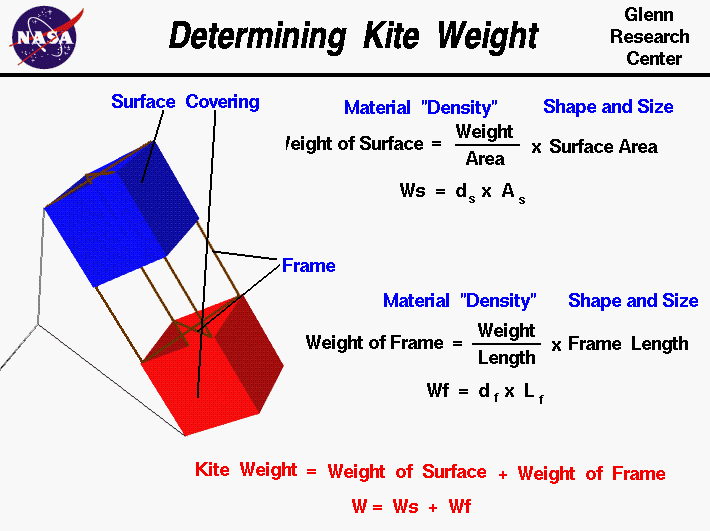

|

A kite
flies
because of
forces
generated by the wind on the kite.
From Newton's
first law
of motion a net vertical external force on the kite accelerates
the kite vertically.
The net vertical force depends on the relative magnitude of the
lift,
the tension in the
control line,
and the weight of the kite.
To design a kite with good performance, we have
to be able to calculate the weight during design.
Kites depend
on surfaces to generate the aerodynamic
forces
necessary for flight by deflecting the wind that blows past the surfaces.
Most kites use a rigid frame to support the surfaces and
transmit the forces. Different
kites.
have different
arrangements
of surfaces and frames,
but we will use a simple box kite as an example on this page.
The flight performance of a kite depends on the relative size of the
lift, drag, and weight forces that act on the kite. So, during design,
we have to be able to determine the weight of the kite before we build it.
Since the kite is composed of only surfaces and a frame, the weight
of the kite, W, is equal to the weight of the surfaces, Ws,
plus the weight of the frame, Wf.
W = Ws + Wf
The surfaces of the kite are made of a thin covering of paper,
plastic, or cloth, which deflects the wind downward and creates the
aerodynamic forces of
lift and
drag on the kite.
The weight of the surface depends on the shape and size of the surface and
on the material that is used to make the surface. We characterize the
size and shape by the area of the surface. (You learn how to calculate
areas based on size and shape in middle school). We characterize the
surface material by a "density"; a weight per unit area of the material.
We put the density in quotes because
density
is a material property normally defined to be
the mass divided by the
volume.
Since we are dealing with very thin coverings
which are nearly the same for all materials,
we can use
area
instead of volume in the definition. And since all the materials
are subjected to the same gravitational acceleration we can use
weight
instead of mass in our definition. The surface material density is determined
by weighing a sample of the material on a scale, measuring the area of
the sample, and performing the division. The weight of the surface is then
the product of the surface material density ,ds, and the surface area, As.
Ws = ds * As
The kite frame is made from several sticks and some string.
The sticks are made of a light,
strong piece of wood such as balsa or bamboo, or a plastic tube.
The weight of the frame depends on the shape and size of the frame and
on the material used to make the frame. We characterize the size and shape
by the total length of all of the sticks used in the frame.
We characterize the frame material by a "density"; a weight per unit length
of the material. Notice that this definition of "density" is different from the
standard mass divided by volume and from the surface definition of weight
divided by area. We use this definition because we are dealing with long thin
sticks in the frame and the material is uniform along the length of the sticks.
We determine the frame material density by weighing a sample on a scale, measuring
the length of the sample, and performing the division. The weight of the frame
is then the product of the frame material density, df, and the length
of the frame, Lf.
Wf = df * Lf
Suppose we have a design that uses a 1/8 square inch balsa frame, and we change to a
1/4 square inch balsa frame.
Even though we are using the same material (balsa), we have to change the
frame material density in the weight calculation.
The frame material density depends on the weight per length and the thicker 1/4
balsa has more weight per length than the 1/8.
You can use the
KiteModeler
computer program to see representative values for the surface and the frame
material densities. Select "Design" mode and push the "Material" button on the
design input panel. You can then use the drop menu for the surface and frame
to display the density.
Activities:
Guided Tours
Navigation ..

- Beginner's Guide Home Page
|